Einführung
LemmaLoom ist eine Anwendung für die qualitative Datenanalyse, die auch Grammatik versteht. Sie können Textstellen so kodieren, wie Sie es aus jeder anderen QDA-Anwendung kennen, aber mit LemmaLoom können Sie diese Kodierungen zusätzlich auf die Grammatik hin befragen, die im ganzen Dokument verwendet wird. Angenommen, Sie haben Textstellen kodiert, die „Unsicherheit“ andeuten; dann können Sie das Dokument nach bestimmten grammatischen Mustern innerhalb dieser Kodierungen abfragen, etwa nach Heckenausdrücken und Modalverben.
Was ist LemmaLoom
LemmaLoom kann mit jeder Art von Text arbeiten. Essays, Meinungsbeiträge, Nachrichtenartikel, Umfragen, Interviews und literarische Werke kann LemmaLoom gleichermaßen verarbeiten. Unterstützt werden allerdings nur bestimmte Formate. Importieren lassen sich reine Textdateien, PDFs, Webartikel (über ihre URL) sowie Audio- und Videoaufnahmen. Audio- und Videoaufnahmen werden dabei mit Spracherkennungsmodellen in Text transkribiert; außerdem erkennt ein Modell zur Sprechertrennung die einzelnen Sprecher im transkribierten Text und kodiert sie automatisch für Sie.
Das Hauptfenster
Das Hauptfenster hat drei Spalten. Ein Rundgang durch das Hauptfenster in Kapitel 2, Erste Schritte beschreibt jedes Element des Fensters im Einzelnen.
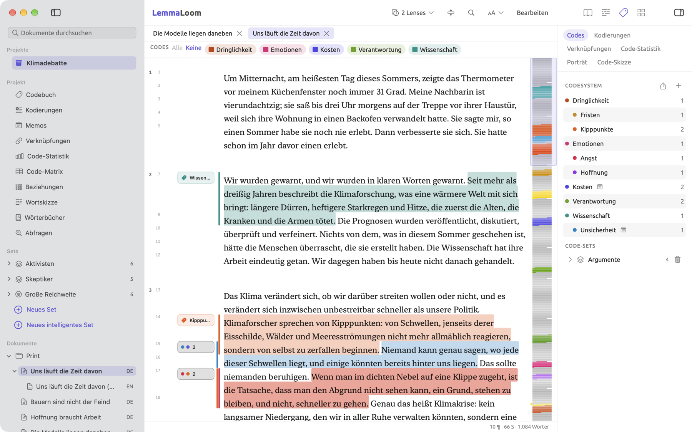
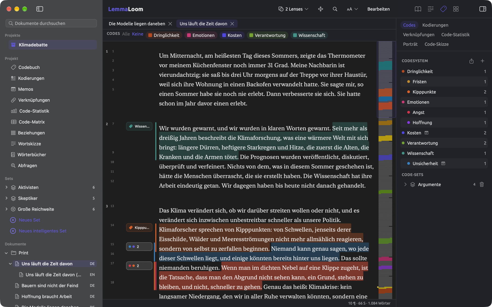
Die Seitenleiste links in LemmaLoom zeigt alle Ihre Projekte. In der Seitenleiste befindet sich unter Projekt das Projektregal des aktiven Projekts mit seinen zehn Bereichen, darunter Codebuch, Code-Matrix und Abfragen. Jeder Bereich öffnet sich als Detailansicht in einem Tab der Leseansicht. Unter dem Regal folgen die Sets, Gruppen und Dokumente des Projekts sowie die Tags dieser Dokumente.
Die Leseansicht nimmt die Mitte des Hauptfensters ein. Jedes Dokument und jede Detailansicht erhält einen eigenen Tab. In der Titelleiste oben in der Leseansicht finden Sie das Lens-Menü und die Schaltflächen, mit denen Sie Text suchen und Schrift und Schriftgröße ändern. Rechts in der Titelleiste liegt Bearbeiten, das die Leseansicht in den Bearbeitungsmodus schaltet. Sobald Sie in der Leseansicht Text auswählen, erscheint unten in der Leseansicht die Auswahlleiste. Dort können Sie auf Lesezeichen, Code, Memo und Verknüpfung klicken; wenn Ihr Projekt ein Wörterbuch verwendet, finden Sie dort auch Zum Wörterbuch hinzufügen.
Rechts in LemmaLoom liegt der Inspektor mit allem, was das Dokument im aktiven Tab betrifft. Seine vier Tabs sind Text, Grammatik, Kodierung und Multimodus; Multimodus enthält den Skizzenraum und einen Abfrageeditor für das Dokument. Die Tabs erreichen Sie auch über Darstellung ▸ Inspektor (⌥⌘1 bis ⌥⌘4). Jeder Tab ist in mehrere Teile gegliedert, die Facetten heißen; mit der Reihe von Schaltflächen oben im Tab wechseln Sie die angezeigte Facette.
Arbeitsweisen
Wenn Ihnen ein Begriff in diesem Kapitel unbekannt ist, springen Sie zum Abschnitt Wichtige Begriffe.
Qualitatives Kodieren
Beim Kodieren versehen Sie Textstellen mit Bezeichnungen, den Codes, und zwar überall dort, wo Text vorkommt, der zu einem Code passt. Ein Code kann thematisch, emotional oder technisch sein, eine Frage oder alles andere, was Sie brauchen. Meist sollen Codes helfen, bestimmte Fragen an Ihr Ausgangsmaterial zu beantworten. Beginnen Sie deshalb mit Ihren Fragen und überlegen Sie, welche Aspekte des Textes helfen könnten, sie qualitativ oder quantitativ zu beantworten. Im mitgelieferten Beispielprojekt „Klimadebatte“ gibt es die Codes „Dringlichkeit“, „Wissenschaft“ und „Emotionen“; Sie sehen dort, wie diese Codes in den Dokumenten des Projekts vergeben sind und wie sie helfen, Fragen danach zu beantworten, wie unterschiedlich die Dokumente Informationen zum Klima darstellen. In der Regel legen Sie Ihre Codes im Codebuch des Projekts an (klicken Sie in der Seitenleiste unter Projekt auf Codebuch) und vergeben sie, während Sie Ihre Texte lesen; Codes lassen sich aber auch erst beim Lesen anlegen, also in vivo. Um eine Textstelle zu kodieren, wählen Sie sie in der Leseansicht aus und klicken unten in der Auswahlleiste auf Code. Dort wählen Sie einen Code aus Ihrem Codebuch oder legen, wie eben beschrieben, einen neuen an.
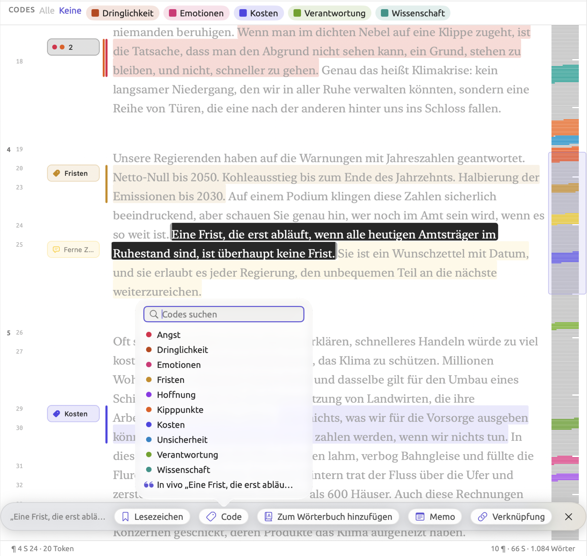
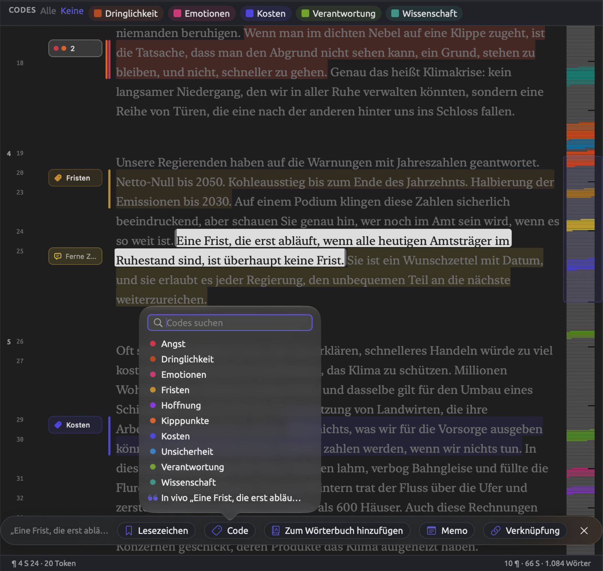
Memos, Verknüpfungen und Lesezeichen ähneln Codes und werden genauso gesetzt, dienen aber jeweils anderen Zwecken. Codes und Kodierungen weiter unten in diesem Kapitel beschreibt jedes davon und wann Sie welches wählen. LemmaLoom kann Textstellen auch automatisch für Sie kodieren (Automatisch kodieren…), und zwar mithilfe einiger Werkzeuge, die später in diesem Handbuch beschrieben werden; Wörterbücher, Abfragen und Analysatoren können alle dazu dienen, das Kodieren bestimmter Muster in Ihren Texten zu automatisieren.
Projekte und Sets enthalten drei Tabellen zu den Kodierungen. Code-Statistik schlüsselt auf, wie oft jeder Code vorkommt; Code-Matrix stellt Codes interaktiv den Dokumenten oder einzelnen Werten eines Attributs gegenüber; Beziehungen zeigt interaktiv, welche Codes gemeinsam in denselben Textstellen vorkommen. Im Tab Kodierung des Inspektors finden Sie ähnliche Angaben für das aktive Dokument, dazu das Porträt, das zeigt, an welcher Stelle im Text jeder Code liegt.
Jede Software, die den REFI-QDA-Standard für den Austausch von Projekten der qualitativen Datenanalyse unterstützt, kann Projekte mit LemmaLoom austauschen. Um ein solches Projekt in LemmaLoom zu importieren, wählen Sie Ablage ▸ Importieren ▸ REFI-QDA-Projekt; um ein Projekt aus LemmaLoom in eine andere Anwendung zu exportieren, wählen Sie Ablage ▸ Exportieren ▸ REFI-QDA-Projekt. Ein Codebuch allein tauschen Sie auf dieselbe Weise mit REFI-QDA-Codebuch in denselben beiden Menüs aus. Um ein ganzes Projekt auf einen anderen Mac zu bringen, exportieren Sie es mit Ablage ▸ Exportieren ▸ LemmaLoom-Projekt; dabei wird alles übernommen, auch die Indizierung und die Mediendateien. Auf dem anderen Mac stellen Sie das exportierte Projektarchiv mit Ablage ▸ Importieren ▸ LemmaLoom-Archiv wieder her. Kapitel 22, Austausch und Export beschreibt beide Arten des Austauschs im Einzelnen.
Linguistische Analyse
Dokumente auf Englisch, Deutsch oder Chinesisch indiziert LemmaLoom beim Import. Bei der Indizierung bestimmt LemmaLoom für jedes Wort Ihres Textes die Grundform und die Wortart, welche Funktion es im Satz hat und wie es mit anderen Wörtern desselben Satzes zusammenhängt. Diese Informationen werden in einer Datenbank „indiziert“ und bilden die Grundlage für die übrigen Grammatikwerkzeuge von LemmaLoom und für Funktionen wie Abfragen und Analysatoren. Von Haus aus bietet LemmaLoom einige eingebaute Auswertungen der indizierten Daten, die Sie über Lenses oder den Grammatik-Inspektor sichtbar machen können (Kapitel 6, Lenses, Kapitel 11, Der Grammatik-Inspektor); dazu gehören Befunde zu Kohäsion, Metadiskurs und Rhetorik (Analysewerkzeuge weiter unten in diesem Kapitel erklärt diese Begriffe).
In der Leseansicht gestalten Lenses Ihren Text so, dass Sie erkennen, wo ein Aspekt einer Lens in Ihrem Dokument vorkommt. Ein Beispiel ist die Lens Wortklasse, die jedes Wort Ihres Dokuments nach seiner Wortklasse (Wortart) einfärbt. Eine Reihe eingebauter Lenses hilft Ihnen, bestimmte grammatische Muster, Formen oder Funktionen in Ihrem Text zu finden. Mit Abfragen und Analysatoren können Sie auch eigene Lenses entwickeln (Kapitel 18, Abfrageergebnisse nutzen, Kapitel 20, Eigene Analysatoren). Grammatische Informationen aus Ihrem Text liefert außerdem der Inspektor (der Bereich rechts neben der Leseansicht). Seine Tabs werten Ihr Dokument auf unterschiedliche Weise aus und helfen Ihnen zu verstehen, was es enthält und was dieser Inhalt grammatisch leistet.
Eine Wortskizze geht von einem Wort aus und ordnet alle Wörter, mit denen es zusammen vorkommt, nach ihrer grammatischen Relation. Beispiele dafür sind die Verben, deren Subjekt Klima ist, und die Adjektive, die Sommer näher bestimmen.
Eine Abfrage ist eine messbare Frage an Ihr Dokument. Mit einer Abfrage können Sie bestimmte Wörter, Phrasen und Muster finden, untersuchen, wie diese mit Ihren Kodierungen zusammenhängen, oder allgemeine Statistiken zu Ihrem Text ermitteln. Eine Abfrage kann ein einzelnes Dokument, ein Set von Dokumenten oder das ganze Projekt erfassen. Abfragen können sogar einige Auswertungen über Projekte hinweg vornehmen, wenn auch in begrenzterem Umfang. Welche Art von Frage Sie stellen, bestimmt, in welcher Form das Ergebnis erscheint. Lautet Ihre Abfrage zum Beispiel nur „finde alle Phrasen, in denen ein Modalverb vorkommt“, erhalten Sie eine Liste all dieser Phrasen; lautet sie dagegen „zähle alle Phrasen, in denen ein Modalverb vorkommt“, erhalten Sie nur einen Zahlenwert. Von der Art des Ergebnisses hängt ab, was Sie in LemmaLoom damit tun können (siehe Kapitel 16, Abfrageergebnisse und Statistik und Kapitel 18, Abfrageergebnisse nutzen).
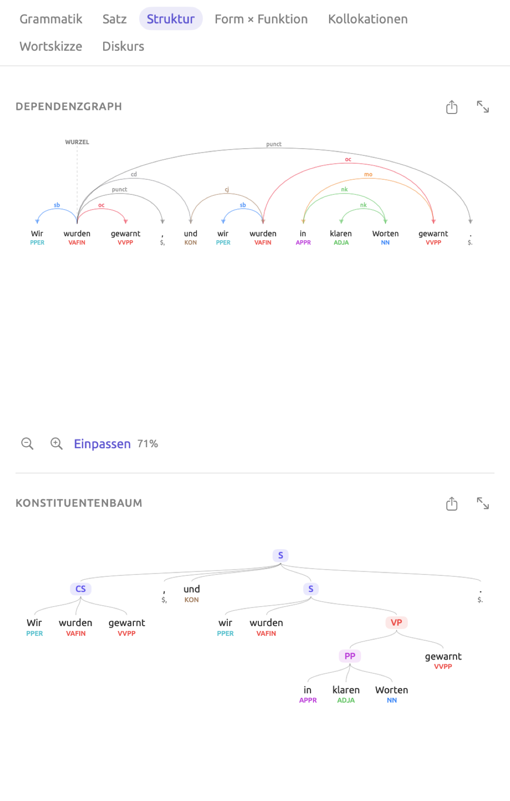
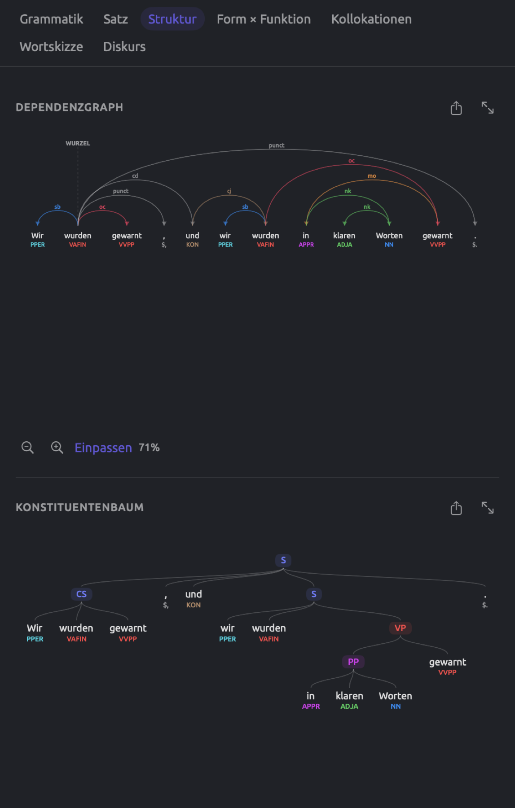
Mixed Methods
Codes, Attribute und Grammatikanalyse liegen alle im selben Projekt. Eine Frage oder Abfrage kann sich auf jeden dieser Aspekte Ihres Projekts beziehen. Nehmen Sie als Beispiel die Code-Matrix von „Klimadebatte“, deren Spalten nach dem Attribut „Haltung“ gruppiert sind; sie zeigt, wie oft jeder Code in den Texten der Aktivisten, in denen der Skeptiker und in den neutralen Quellen vergeben wurde. Hier verbinden Sie Kodierungen und Attribute und machen sichtbar, wie unterschiedliche Codes im Verhältnis zu einem anderen Aspekt vergeben sind, etwa zum Wert eines Attributs.
Eine Abfrage kann die Begriffe eines Wörterbuchs zählen, die in Ihrem Korpus gefunden werden, und vergleichen, wie oft diese Treffer im Verhältnis zu einem anderen Filter vorkommen, etwa zu einem Attribut. Ein Beispiel aus dem Projekt „Klimadebatte“ wäre eine Abfrage, die mit dem Wörterbuch „Heckenausdrücke“ ermittelt, wie oft Treffer pro 10.000 Wörter in Dokumenten mit dem Attributwert „Aktivismus“ oder „Skepsis“ vorkommen. Eine solche Abfrage liefert eine Rate. In diesem Beispiel ist die Rate die Zahl der gefundenen Heckenausdrücke, geteilt durch die Gesamtzahl der Wörter und multipliziert mit 10.000. Sechs Heckenausdrücke in einer Kolumne mit 600 Wörtern (runde Zahlen, zur Veranschaulichung erfunden) ergeben dann , also 100 Heckenausdrücke pro 10.000 Wörter. Der Abfrageeditor auf Projektebene bietet eine Reihe von Vorlagen als Ausgangspunkt für verschiedene Arten von Abfragen und Ergebnissen.
Der Skizzenraum ist ein visuelles Werkzeug, mit dem Sie nachvollziehen, wie sich grammatische Partner über andere Aspekte Ihrer Dokumente verteilen, etwa über Codes oder Attribute. Sie können zum Beispiel vergleichen, welche Verben Klima als Subjekt haben, einmal in den Dokumenten mit dem Attributwert „Aktivismus“ und einmal in denen mit „Skepsis“. So sehen Sie, ob sich bestimmte Gruppen von Dokumenten darin unterscheiden, wie oft etwas in ihnen vorkommt. Wie groß dieser Unterschied ist, zeigt eine Abfrage mit der Darstellung Vergleichen.
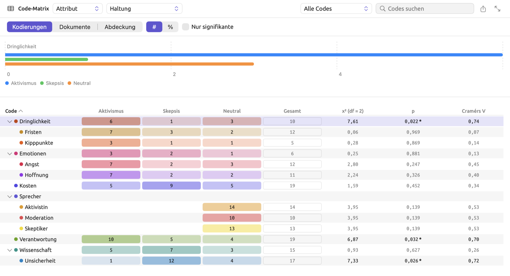
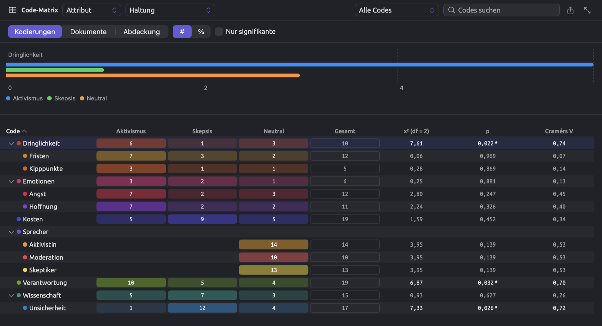
Gibt eine Abfrage Textstellen aus Dokumenten aus, sehen Sie, woher diese Textstellen stammen. Sie können direkt zu ihnen springen. Kapitel 16, Abfrageergebnisse und Statistik beschreibt ausführlich, wie Sie Abfrageergebnisse deuten.
Wichtige Begriffe
Das Glossar unter Hilfe ▸ Glossar erklärt die meisten der folgenden Begriffe. Außerdem erklärt es die grammatischen Bezeichnungen, die LemmaLoom verwendet, darunter die Kürzel für Wortarten und Dependenzrelationen. Geben Sie Ihren Suchbegriff in das Feld Suchen des Glossars ein oder wählen Sie in seiner Seitenleiste eine Kategorie zum Durchblättern. Sie können das Glossar neben Ihrer Arbeit geöffnet lassen.
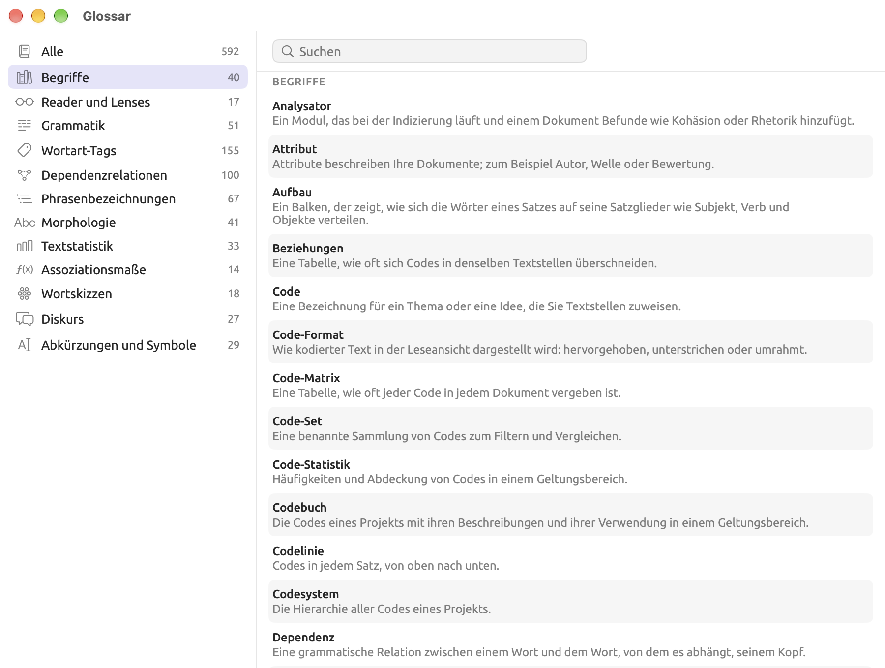
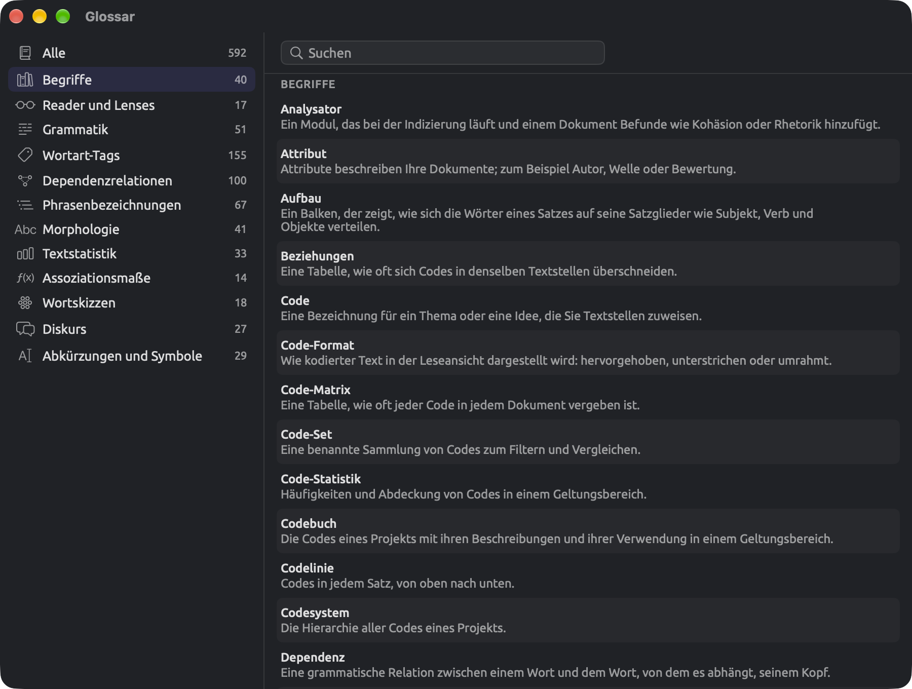
Projekte, Dokumente und Übersetzungen
Ein Projekt enthält in LemmaLoom eine Studie, also ihre Dokumente und alles, was zu deren Auswertung gehört. Alle Kodierungen, Codes, Memos, Sets, Attribute, gesicherten Abfragen und Wörterbücher, die Sie anlegen, gehören zu diesem Projekt. Projekte sind voneinander getrennt, und sie teilen sich nur drei Dinge. Eigene Analysatoren und Tags gelten für alle Projekte. Dasselbe gilt für Abfragen, die Sie für alle Projekte sichern. Mehr dazu finden Sie unter Projektübergreifend arbeiten in Kapitel 3, Projekte und Dokumente.
Dokumente sind die einzelnen Texte im Projekt. Dokumente können als reine Textdateien oder PDFs vorliegen oder direkt von Websites oder aus Webartikeln stammen. Audio- und Videoaufnahmen sind ebenfalls Dokumente; sie werden beim Import für Sie transkribiert. Word-Dateien importieren Sie, indem Sie sie zuerst als reinen Text oder als PDF speichern. Mehr dazu steht unter Textdateien in Kapitel 4, Material importieren. Jedes Dokument hat Metadaten wie Name und Sprache, Autoren, Datum, Verlag und DOI; Sie bearbeiten sie in den Dokumenteigenschaften. Die Dokumenteigenschaften öffnen Sie über das Kontextmenü des Dokuments in der Seitenleiste; klicken Sie bei gedrückter Control-Taste auf den Namen des Dokuments und wählen Sie im Menü Eigenschaften. Kontextmenüs sind weiter unten in diesem Kapitel unter Konventionen beschrieben.
Wenn Sie eine Aufnahme als Dokument importieren, sind jeder Passage ihres Transkripts ein Zeitstempel und, wenn mehr als eine Stimme erkannt wird, eine sprechende Person zugeordnet. „Radiodebatte“ ist ein Beispiel für eine transkribierte Audioaufnahme, in der drei Personen sprechen, nämlich „Moderation“, „Aktivistin“ und „Skeptiker“.
Eine Übersetzung ist eine Fassung eines Dokuments in einer anderen Sprache. Um eine Übersetzung zu erstellen, wählen Sie Übersetzen im Kontextmenü des Dokuments. Die Seitenleiste listet Übersetzungen unter dem Dokument auf, aus dem sie hervorgegangen sind. Das übersetzte Dokument trägt den Namen des Originals, gefolgt von der Zielsprache in Klammern, etwa „Uns läuft die Zeit davon (Englisch)“. Original und Übersetzung sind (so genau wie möglich) einander zugeordnet, sodass eine Kodierung oder ein Memo, das Sie in einem der beiden hinzufügen, an der richtigen Stelle auch im anderen erscheint. Verknüpfungen und Lesezeichen werden auf dieselbe Weise übernommen. Zählungen und Suchen in einem Set oder einem Projekt berücksichtigen nur das Originaldokument, sofern Sie nicht ausdrücklich etwas anderes festlegen. Um Übersetzungen einzubeziehen, stellen Sie das Korpus einer Abfrage auf Übersetzungen oder Beide. Für eine Wortskizze wählen Sie eine Übersetzungssprache als Korpus. Kapitel 9, Übersetzungen und geteilte Ansicht beschreibt ausführlicher, wie sich Übersetzungen nutzen lassen.
Dokumente ordnen
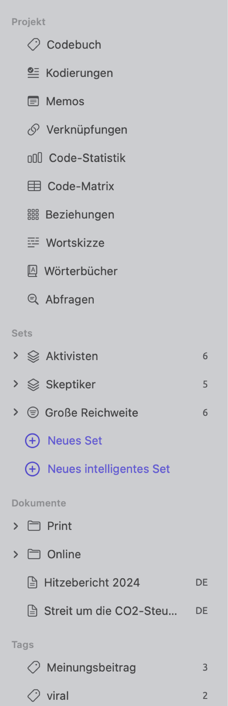
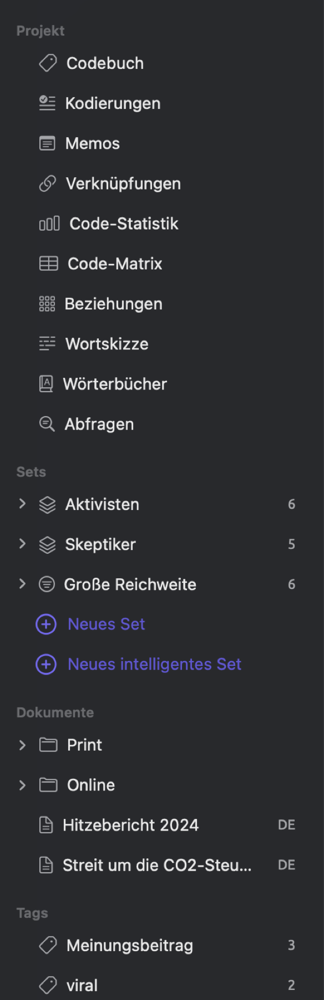
Gruppen dienen wie Ordner dazu, Ihre Dokumente zu ordnen. Ein Dokument kann nur in einer einzigen Gruppe oder in gar keiner liegen. Anders als Dokumentsets bilden Gruppen keine inhaltliche Einheit; sie ordnen vor allem Ihre Liste. Um die Dokumente einer Gruppe auszuwerten, legen Sie ein intelligentes Set mit einer Bedingung Gruppe an oder verwenden stattdessen ein Dokumentset. Im Projekt „Klimadebatte“ sehen Sie, dass manche Dokumente in Gruppen liegen und andere nicht.
Ein Set (oder Dokumentset) ist eine benannte Sammlung von Dokumenten innerhalb eines Projekts. Mit einem Set legen Sie meist fest, welche Dokumente eine Analyse erfassen soll. Sets dürfen sich überschneiden; ein Dokument kann gleichzeitig zu mehreren Sets gehören. Wenn Sie in der Seitenleiste auf ein Set klicken, öffnet es sich; es enthält dieselben zehn Bereiche wie das Projektregal, beschränkt auf seine Dokumente. „Klimadebatte“ hat zwei Dokumentsets, „Aktivisten“ und „Skeptiker“.
Ein intelligentes Set bestimmt seine Mitglieder automatisch über Bedingungen. LemmaLoom verfolgt laufend, ob die Dokumente die Kriterien des Sets erfüllen. Eine Bedingung kann ein Attribut, Tags oder Gruppen prüfen. Außerdem können Bedingungen das Format, die Sprache oder Metadaten eines Dokuments wie Titel und Datum prüfen. Das intelligente Set „Große Reichweite“ hat zum Beispiel eine Bedingung, nämlich „Reichweite“ ist mindestens 100.000.
Tags sind frei wählbare Bezeichnungen für Projekte und Dokumente. Auch Codes, Verknüpfungen und Memos können Sie mit Tags versehen. Mit Tags lassen sich Listen filtern und Dokumente auswählen. Alle Ihre Projekte teilen sich eine gemeinsame Liste von Tags. Unter Fenster ▸ Tags öffnen Sie diese Liste; neben jedem Tag steht die Zahl der Objekte, die es tragen. Bei Tag-Namen spielt die Groß- und Kleinschreibung keine Rolle; „Viral“ und „viral“ sind also dasselbe Tag. Außerdem wirkt jedes Tag an den Dokumenten des Projekts wie ein Set und erscheint im Abschnitt Tags der Seitenleiste. Mehrere Dokumente in „Klimadebatte“ tragen die Tags „Meinungsbeitrag“ und „viral“.
Ein Attribut hält eine sachliche Angabe zu jedem Dokument fest. Beispiele für Attribute sind die Haltung, die ein Text einnimmt, und sein Erscheinungsdatum. Jedes Attribut braucht einen Namen und einen Typ. Zur Verfügung stehen Text, Ganzzahl, Dezimalzahl, Boolescher Wert (ja oder nein), Datum und Auswahl (ein Wert aus einer festen Liste). Um Attributwerte einzugeben, öffnen Sie Attribute über das Kontextmenü eines Projekts. Es öffnet sich das Fenster Attribute, eine Tabelle mit den Dokumenten als Zeilen und den Attributen als Spalten. Klicken Sie auf Attribut hinzufügen, um ein neues Attribut anzulegen, und tragen Sie seine Werte für alle Dokumente ein. Die Werte eines einzelnen Dokuments können Sie auch in seinen Dokumenteigenschaften eingeben. „Klimadebatte“ hat vier Attribute:
| Attribut | Typ | Werte |
|---|---|---|
| Haltung | Auswahl | Aktivismus, Skepsis oder Neutral |
| Reichweite | Ganzzahl | eine ganze Zahl |
| Erscheinungsdatum | Datum | ein Datum |
| Medium | Text | beliebiger Text |


Die Bedingungen eines intelligenten Sets können Attribute prüfen. Ein Attribut kann die Spalten der Code-Matrix gruppieren. Das Ergebnis einer Abfrage können Sie nach einem Attribut aufteilen und so verschiedene Gruppen von Ergebnissen vergleichen. Tags, Sets, Gruppen und Attribute behandelt Kapitel 8, Sets, Gruppen, Tags und Attribute ausführlich. Zu Attributen von Codes siehe Codes und Kodierungen unten.
Codes und Kodierungen
Kodieren heißt in LemmaLoom, Textstellen in Dokumenten thematischen Bezeichnungen zuzuordnen, den Codes. Ein Code kann für jedes Thema, jeden Gedanken, jede Frage oder jeden Gegenstand in Ihren Dokumenten stehen; ein Code, der unter einem anderen Code liegt, wird zum Untercode. So sind die Codes „Kipppunkte“ und „Fristen“ in „Klimadebatte“ beide Untercodes von „Dringlichkeit“. Wie ein Code in der Leseansicht erscheint, bestimmen die Farbe und das Format, die Sie für ihn wählen (die Formate sind Hervorheben, Unterstreichen und Umrahmt). Die Beschreibung, die Tags und die Attribute eines Codes lassen sich festlegen, dazu sein Geltungsbereich, der das ganze Projekt, ein einzelnes Dokumentset oder ein einzelnes Dokument umfassen kann. In der Regel legen Sie Ihre Codes im Codebuch an (Codebuch unter Projekt in der Seitenleiste); diese Liste zeigt für jeden angelegten Code die Beschreibung und wie oft er insgesamt verwendet wird. Um eine Teilmenge der Codes zu filtern oder zu vergleichen, können Sie sie in Code-Sets zusammenfassen. „Klimadebatte“ hat das Code-Set „Argumente“.
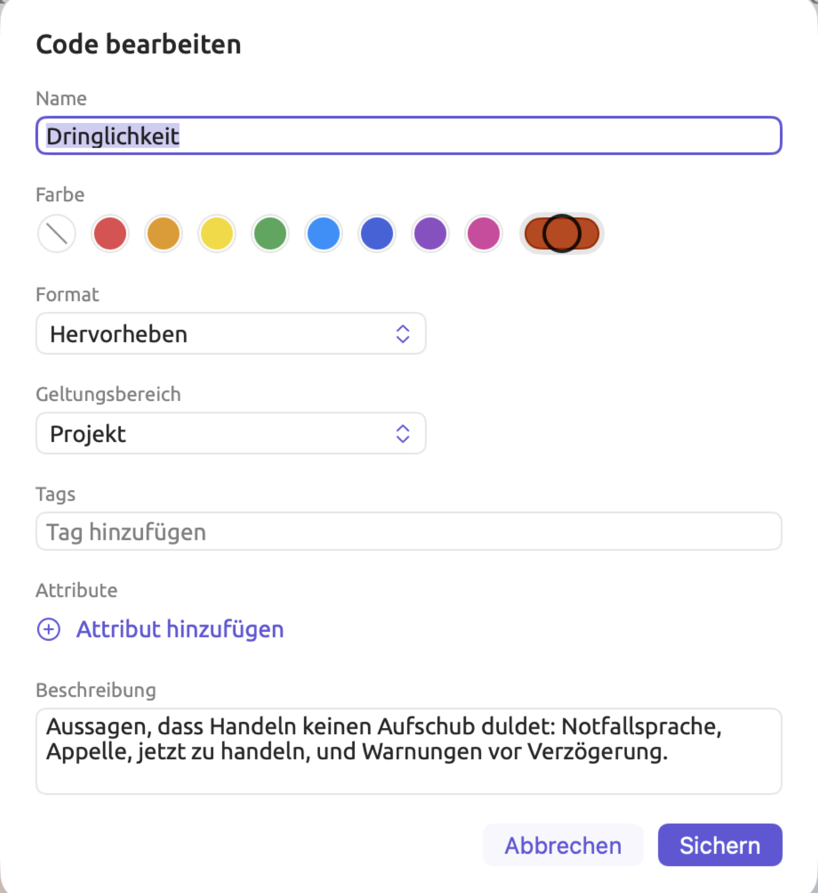
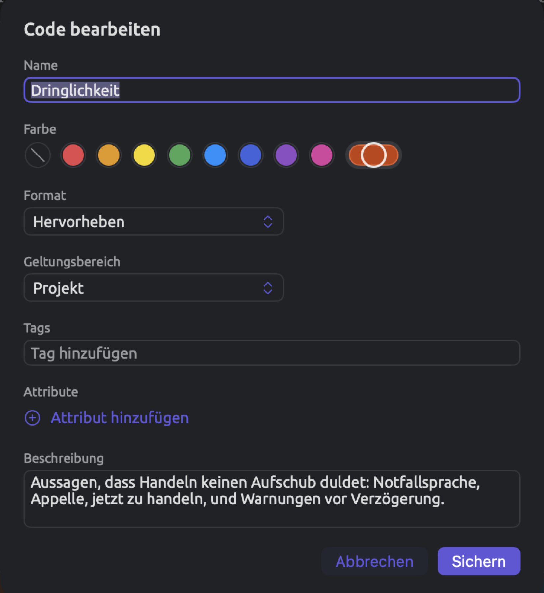
Jedes Mal, wenn Sie einer Textstelle einen Code zuweisen, entsteht eine Kodierung; die Textstelle heißt das Segment der Kodierung oder gleichbedeutend ihr kodiertes Segment. Ein kodiertes Segment besteht immer aus genau einer Textstelle mit einem Code; eine Textstelle, die sowohl mit „Kosten“ als auch mit „Verantwortung“ kodiert ist, zählt deshalb als zwei getrennte Kodierungen. Kodierungen können sich überschneiden und ineinander liegen. Haben die Codes Attribute, gehören die Attributwerte zu jeder einzelnen Kodierung und nicht zum Code. Stellen Sie sich einen Code für Emotionen vor, mit einem Attribut für die Stärke der Emotion; wenn Sie den Code verschiedenen Textstellen zuweisen, geben Sie für jede Kodierung eine Stärke an.
Memos, Verknüpfungen und Lesezeichen haben viel mit Kodierungen gemeinsam, denn sie werden alle auf ähnliche Weise gesetzt (Textstelle auswählen und auf die passende Schaltfläche in der Auswahlleiste klicken); sie erfüllen jedoch unterschiedliche Aufgaben. Mit einem Memo kommentieren Sie ausgewählte Textstellen. Wählen Sie die gewünschte Textstelle aus und klicken Sie auf Memo. Memos lassen sich auch Codes zuordnen (kodierte Memos) und tragen dann die Tags des Codes; sie haben außerdem eigene Werte für die Attribute des Codes, und Abfragen können sie zusammen mit den Kodierungen dieses Codes zählen. Mit Verknüpfungen verbinden Sie Textstellen miteinander, im selben Dokument oder über Dokumente hinweg; so behalten Sie den Überblick über Textstellen, die zusammenhängen (etwa Textstellen, die einander widersprechen oder aufeinander antworten). Wählen Sie zuerst eine Textstelle aus und klicken Sie auf Verknüpfung; wählen Sie dann eine zweite Textstelle aus und klicken Sie auf Verknüpfung abschließen. Die Verknüpfung führt von der ersten zur zweiten Textstelle. Bei einer Verknüpfung können Sie in eigenen Worten die Beziehung zwischen ihren beiden Enden angeben und einen Kommentar und Tags hinzufügen. Lesezeichen dienen allein dazu, Textstellen festzuhalten, zu denen Sie später zurückkehren möchten; wählen Sie eine Textstelle aus, klicken Sie auf Lesezeichen und geben Sie dem Lesezeichen bei Bedarf einen Kommentar und eine Farbe. Textstellen mit Lesezeichen sehen Sie in der Leseansicht mit der Lens Lesezeichen und im Tab Text des Inspektors.

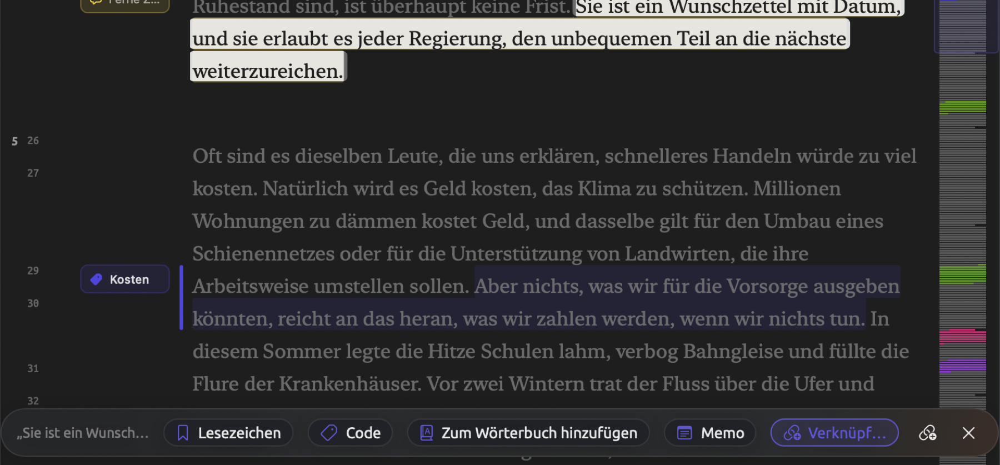
Analysewerkzeuge
Wenn Sie einem Projekt ein Dokument hinzufügen, indiziert LemmaLoom es, indem es seine Grammatik analysiert. Dabei wird der Text in Sätze und Tokens zerlegt, also in einzelne Wörter und Satzzeichen. Danach erhält jedes Wort sein Lemma, seine Wortart und seine grammatischen Merkmale. Das Lemma ist die Grundform eines Wortes, wie sie im Wörterbuch steht; ging und gegangen ergeben deshalb beide das Lemma gehen. Über die einzelnen Wörter hinaus erfasst LemmaLoom, wie die Wörter eines Satzes zusammenhängen, und hält die Phrasen fest, die sie bilden. Lange Texte und Aufnahmen können je nach Rechenleistung Ihres Macs eine ganze Weile brauchen, bis sie verarbeitet oder transkribiert sind. Während der Indizierung zeigt ein Fortschrittsring neben dem Dokument in der Seitenleiste an, wie weit sie fortgeschritten ist. Das Fenster Aktivität, das Sie über Fenster ▸ Aktivität (⌥⌘0) öffnen, zeigt alle laufenden Vorgänge. Ein Dokument muss nicht sofort beim Import indiziert werden; Sie können Dokumente mit ausgeschalteter Option Für die Grammatikanalyse indizieren hinzufügen und die Indizierung später in den Dokumenteigenschaften mit Jetzt indizieren nachholen.
Eine Lens gestaltet den Text oder fügt Annotationen hinzu und hebt so hervor, wo in Ihrem Dokument bestimmte Kategorien vorkommen, seien es Wortklassen, Codes oder etwas anderes, das Sie brauchen. Lenses wählen Sie im Lens-Menü, dem ersten Bedienelement am rechten Ende der Titelleiste. Es können mehrere Lenses gleichzeitig ausgewählt sein. Manche Lenses wie Wortklasse, Modalität und Verneinung stellen die Grammatikanalyse dar, die anderen wie Codes und Lesezeichen Ihre eigene Arbeit mit den Werkzeugen, die Sie angelegt haben. Codes und Lesezeichen sind bereits aktiviert, wenn Sie ein Dokument zum ersten Mal öffnen. Jedes Wörterbuch, jeder eigene Analysator und jede als Lens gesicherte Abfrage erscheint im Lens-Menü als eigene Lens. Solange ein Dokument noch nicht indiziert ist, bleibt das Lens-Menü deaktiviert.
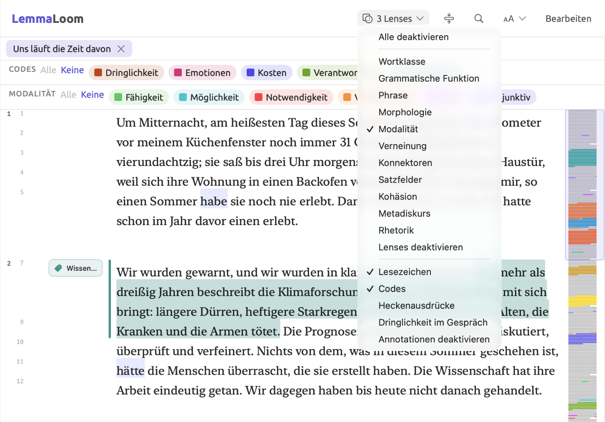
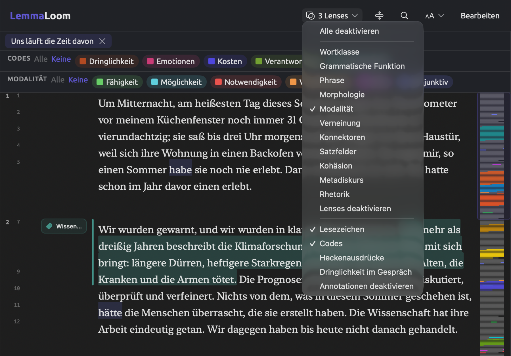
Ein Analysator ist ein Modul, das dem Dokument bei der Indizierung Analyseergebnisse hinzufügt. LemmaLoom bringt drei eingebaute Analysatoren mit. Kohäsion verfolgt, wie jeder Satz an den vorangehenden Kontext anknüpft, Metadiskurs annotiert Wörter, die das Publikum lenken (etwa Heckenausdrücke und Verstärker), und Rhetorik erkennt Stilmerkmale wie das Passiv und den Parallelismus. Unter Fenster ▸ Analysatoren können Sie eigene Analysatoren mit Skripten in JavaScript erstellen; ein eigener Analysator steht in jedem Projekt zur Verfügung. Die Ergebnisse eines Analysators lassen sich als Lens darstellen oder mit Abfragen durchsuchen. Welche Analysatoren laufen, wählen Sie beim Import eines Dokuments; in den Dokumenteigenschaften können Sie einen Analysator aber auch für ein vorhandenes Dokument ausführen oder ihn entfernen.
Eine Abfrage durchsucht Ihre Dokumente und liefert ein Ergebnis mit den Elementen, die die festgelegten Bedingungen erfüllen. Sie bauen eine Abfrage im Abfrageeditor aus Bedingungen auf; manche Bedingungen bestimmen, wonach gesucht wird (z. B. Wörter, Sätze, Kodierungen oder Dokumente), andere legen die Kriterien der Suche und die Darstellung fest (z. B. Liste, Anzahl oder Vergleichen, wenn Sie Gruppen vergleichen möchten). Je nach Umfang der Suche erstellen Sie eine Abfrage unter Fenster ▸ Abfragen (projektübergreifend), im Bereich Abfragen eines Projekts oder Dokumentsets oder im Tab Multimodus des Inspektors (für ein einzelnes Dokument). Gesicherte Abfragen können zu Dokumenten, Sets, Projekten oder zu allen Projekten gehören und als Lenses, intelligente Sets und sogar eigene Analysatoren dienen; außerdem kann LemmaLoom auf Grundlage von Abfragen automatisch kodieren. Sie müssen aber nicht alles selbst aufbauen, denn überall, wo Sie Abfragen erstellen, finden Sie unter Vorlagen eine Sammlung fertiger Abfragen, die Vorlagen heißen; dazu gehören etwa Konkordanz, Schlüsselwörter und Kodierungen nach Attribut. Das Projekt „Klimadebatte“ enthält zwei gesicherte Abfragen, „Dringlichkeit im Gespräch“, die als Lens gesichert ist, und „Schlüsselwörter: Aktivisten“, die zum Set „Aktivisten“ gehört.
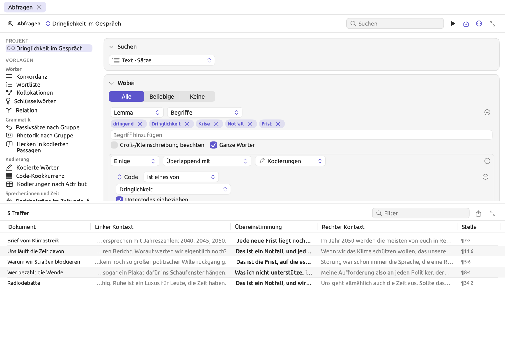
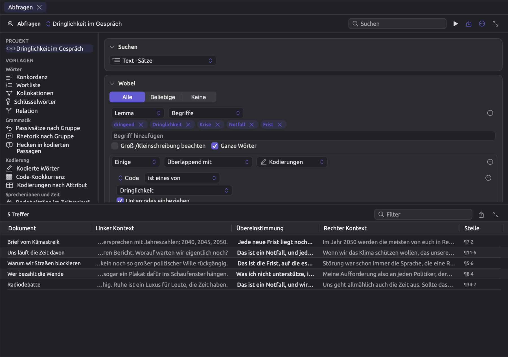
Wörterbücher sammeln Begriffe unter benannten Kategorien; so können Sie diese Wörter in Dokumenten finden und Statistiken nach Kategorien erstellen. Jedes Wörterbuch lässt sich auch als Lens darstellen. Die Wörterbücher eines Projekts liegen in seinem Bereich Wörterbücher; Begriffe aus der Auswahl nehmen Sie mit Zum Wörterbuch hinzufügen in der Auswahlleiste in ein Wörterbuch auf (dort wählen Sie das Wörterbuch und die Kategorie). Das Projekt „Klimadebatte“ hat zum Beispiel ein Wörterbuch namens „Heckenausdrücke“. Es enthält zwei Kategorien:
| Kategorie | Begriffe |
|---|---|
| Approximatoren | etwa, ungefähr, rund, knapp, fast, beinahe, so gut wie, mehr oder weniger, annähernd |
| Abschwächer | ich glaube, glaube ich, ich denke, vielleicht, wahrscheinlich, vermutlich, scheint, würde ich sagen, ich bin mir nicht sicher |
Das Beispielprojekt
Die meisten Beispiele, Diagramme und Bildschirmfotos in diesem Handbuch stammen aus einem einzigen Projekt, „Klimadebatte“. Dieser erfundene Datensatz enthält Meinungsbeiträge, Kolumnen und andere Texte zum Klimawandel, die im Verlauf einer öffentlichen Debatte darüber erschienen sind. LemmaLoom liefert dieses Beispielprojekt mit, damit Sie jeden Schritt in diesem Handbuch selbst nachvollziehen können, indem Sie „Klimadebatte“ importieren. Wählen Sie Ablage ▸ Importieren ▸ Beispielprojekt, um „Klimadebatte“ als aktives Projekt in Ihre LemmaLoom-Bibliothek zu importieren; seine Dokumente sind bereits indiziert.
| Element | Im Projekt „Klimadebatte“ |
|---|---|
| Dokumente | Insgesamt 15. Elf Dokumente als reiner Text, darunter Meinungsbeiträge, Kolumnen, Blogbeiträge und eine Rede, mit „Uns läuft die Zeit davon“, „Brief vom Klimastreik“, „Warum wir Straßen blockieren“, „Bauern sind nicht der Feind“, „Das Versprechen der Bürgermeisterin“ und „Hoffnung braucht Arbeit“ von Aktivisten sowie „Die Modelle liegen daneben“, „Netto-Null wird teuer“, „Keine Panik“, „Wer bezahlt die Wende“ und „Wissenschaft ist nie abgeschlossen“ von Skeptikern. „Hitzebericht 2024“, ein PDF; „Streit um die CO2-Steuer“, eine Webseite; „Radiodebatte“, eine Audioaufnahme mit Transkript; und „Uns läuft die Zeit davon (Englisch)“, eine englische Übersetzung von „Uns läuft die Zeit davon“ |
| Gruppen | „Print“, „Online“ |
| Sets | „Aktivisten“ (die sechs Texte von Aktivisten), „Skeptiker“ (die fünf Texte von Skeptikern) |
| Intelligentes Set | „Große Reichweite“ mit der Bedingung „Reichweite“ ist mindestens 100.000 |
| Tags | „Meinungsbeitrag“, „viral“ |
| Attribute | „Haltung“, „Reichweite“, „Erscheinungsdatum“, „Medium“ |
| Codes | „Dringlichkeit“ (mit den Untercodes „Kipppunkte“ und „Fristen“), „Wissenschaft“ (mit dem Untercode „Unsicherheit“), „Kosten“, „Verantwortung“ und „Emotionen“ (mit den Untercodes „Angst“ und „Hoffnung“); „Radiodebatte“ hat außerdem „Sprecher“ (mit den Untercodes „Moderation“, „Aktivistin“ und „Skeptiker“) |
| Code-Set | „Argumente“ |
| Wörterbuch | „Heckenausdrücke“ mit den Kategorien „Approximatoren“ und „Abschwächer“ |
| Gesicherte Abfragen | „Dringlichkeit im Gespräch“ (als Lens gesichert), „Schlüsselwörter: Aktivisten“ (im Set „Aktivisten“) |
Aufbau des Handbuchs
Die Kapitel beginnen meist mit den Begriffen, auf denen sie aufbauen. Danach folgen die Arbeitsschritte und zuletzt die Einzelheiten. Wenn LemmaLoom neu für Sie ist, beginnen Sie am besten mit dem Schnellstart, der Sie in einer Sitzung durch ein erstes Projekt führt. Danach folgt Kapitel 2, Erste Schritte. Dieses Kapitel stellt das Hauptfenster von LemmaLoom vor und zeigt, wie LemmaLoom den Arbeitsbereich ordnet, mit Themen wie Projekten, dem Import von Dokumenten und dem Kodieren. Ab hier können Sie die Kapitel ganz nach Ihren Interessen lesen. Wenn Sie zum Beispiel viel kodieren, lesen Sie Kapitel 7, Kodieren und Kapitel 8, Sets, Gruppen, Tags und Attribute. Für Grammatik und Wortzählungen lesen Sie mit Kapitel 6, Lenses, Kapitel 11, Der Grammatik-Inspektor und den Kapiteln über Abfragen weiter.
| Kapitel | Inhalt |
|---|---|
| Erste Schritte | Erster Start, das Hauptfenster, Projekte, Import, Kodieren und eine erste Analyse |
| Projekte und Dokumente | Projekte, Dokumente, die Seitenleiste, Dokumenteigenschaften und projektübergreifendes Arbeiten |
| Material importieren | Textdateien, PDFs, Webseiten, Aufnahmen und Attributwerte |
| Lesen und Bearbeiten | Die Leseansicht, Text suchen und auswählen, ein Dokument bearbeiten |
| Lenses | Jede Lens und was sie annotiert |
| Kodieren | Codes, Kodierungen, Memos, Verknüpfungen, Lesezeichen und automatisches Kodieren |
| Sets, Gruppen, Tags und Attribute | Ein Projekt für die Analyse unterteilen |
| Übersetzungen und geteilte Ansicht | Dokumente übersetzen und zwei nebeneinander lesen |
| Der Text-Inspektor | Zählungen, Lesbarkeits- und Wortschatzmaße für ein Dokument |
| Der Grammatik-Inspektor | Satzdiagramme, Kollokate und Diskurs in einem Dokument |
| Wortskizze | Die grammatischen Partner eines Wortes und wie sie bewertet werden |
| Codes auswerten | Tabellen, Matrizen und Diagramme der Kodierungen sowie Maße für gemeinsames Auftreten |
| Skizzenraum | Die Partner eines Wortes im Vergleich zwischen Codes oder Attributwerten |
| Eine Abfrage erstellen | Der Abfrageeditor, seine Bedingungen und wo Abfragen aufbewahrt werden |
| Abfrageergebnisse und Statistik | Jede Darstellung der Ergebnisse und die Statistiken, die sie angibt |
| Abfragemuster und Erkundung | Grammatische Muster und die Suche nach Textstellen, die bereits kodierten ähneln |
| Abfrageergebnisse nutzen | Eine Abfrage in eine Lens, einen Analysator oder ein intelligentes Set umwandeln und mit Treffern arbeiten |
| Wörterbücher | Kategorien von Begriffen, wie sie gefunden werden, und die Wörterbuch-Lens |
| Eigene Analysatoren | Eigene Analysatoren in JavaScript schreiben |
| Analyse und Indizierung | Was die Indizierung für jede Sprache liefert und wie Sie sie steuern |
| Austausch und Export | REFI-QDA-Austausch, LemmaLoom-Archive und andere Exporte |
| Widerrufen und Wiederholen | Was sich widerrufen lässt |
| Einstellungen und Darstellung | Erscheinungsbilder, Einstellungen der Leseansicht, Lens-Stile und die Sprache der Benutzeroberfläche |
| Tastaturkurzbefehle | Alle Tastaturkurzbefehle |
| Hilfe und Support | Das Glossar, Feedback und wie Sie ein Problem melden |
| Statistik im Überblick | Alle Statistiken in einer Tabelle |
Konventionen
Begriffe in Fettdruck, etwa Menüs und Beschriftungen wie Code, Wortskizze oder Automatisch kodieren…, erscheinen in LemmaLoom genau so, wie sie hier stehen. Da dies die deutsche Ausgabe des Handbuchs ist, beziehen sich diese Begriffe auf die deutsche Benutzeroberfläche.
Menübefehle werden als Pfad geschrieben; der Name des Menüs steht vor dem Befehl, getrennt durch ▸. Ablage ▸ Importieren ▸ Webseiten bedeutet, dass Sie Ablage öffnen, auf Importieren zeigen und dann Webseiten wählen. Das Programmmenü von LemmaLoom heißt immer LemmaLoom, die Einstellungen finden Sie unter LemmaLoom ▸ Einstellungen …. Wenn Sie auf einen Menübefehl klicken, dessen Name auf Auslassungspunkte (…) endet, öffnet sich ein Dialog oder ein Fenster, in dem Sie Ihre Optionen festlegen, bevor etwas geschieht.
Viele Objekte in LemmaLoom haben ein Kontextmenü. Sie öffnen es je nach Eingabegerät mit einem Sekundärklick oder indem Sie bei gedrückter Control-Taste klicken. Im Kontextmenü eines Dokuments in der Seitenleiste finden Sie zum Beispiel Übersetzen, Eigenschaften und Dokument löschen.
Für die Sondertasten in Tastaturkurzbefehlen verwendet macOS diese Symbole:
| Symbol | Taste |
|---|---|
| ⌘ | Befehlstaste |
| ⇧ | Umschalttaste |
| ⌥ | Wahltaste |
| ⌃ | Control-Taste |
Für ⇧⌘C halten Sie die Umschalttaste und die Befehlstaste gedrückt und drücken dann C. Hat ein Befehl einen Kurzbefehl, steht dieser in Klammern dahinter, etwa Dokument ▸ Code (⇧⌘C). Eine Liste der Tastaturkurzbefehle finden Sie in Kapitel 25, Tastaturkurzbefehle.
Kursivschrift kennzeichnet die Stelle, an der ein Begriff erklärt wird, sowie wörtliche Zitate aus den untersuchten Dokumenten, etwa Klima und vielleicht. Text, den Sie wörtlich eingeben, erscheint in Festbreitenschrift, ebenso Dateinamen und Dateiendungen wie .qdpx; Namen aus dem Projekt „Klimadebatte“, etwa das Set „Aktivisten“ und der Code „Fristen“, stehen in Anführungszeichen.
Abgeblendete oder deaktivierte Bedienelemente passen entweder nicht zu Ihrem aktuellen Kontext oder stehen dafür gerade nicht zur Verfügung. Um zu erfahren, warum eine Schaltfläche oder Option in einem Fenster oder Dialog deaktiviert ist, halten Sie den Mauszeiger darauf.
Systemvoraussetzungen
LemmaLoom setzt macOS 26.6 oder neuer voraus.
Die Anwendung enthält alle Komponenten, die für Grammatikanalysen und für Transkriptionen mit den Whisper-Modellen nötig sind. Das Standardmodell Apple-Spracherkennung verwendet Sprachkomponenten von macOS, die LemmaLoom herunterlädt, falls sie auf Ihrem Mac noch nicht installiert sind. Übersetzungen hängen von den in macOS installierten Übersetzungssprachen ab. Wenn Sie zum ersten Mal zwischen zwei Sprachen übersetzen, fordert macOS Sie möglicherweise auf, diese Sprachen zu installieren.
Unterstützte Sprachen
Sprache der Benutzeroberfläche
Die Sprache der Benutzeroberfläche von LemmaLoom kann Englisch, Deutsch oder vereinfachtes Chinesisch (Festland) sein. Das gilt für Menüs, Fenster und Meldungen in der gesamten App. Standardmäßig verwendet LemmaLoom diejenige der drei Sprachen, die in Ihrer Sprachreihenfolge unter Systemeinstellungen ▸ Allgemein ▸ Sprache & Region am weitesten oben steht. Ist keine der drei Sprachen in den Einstellungen für Sprache & Region aufgeführt, verwendet die App Englisch.
LemmaLoom kann auch eine eigene Sprache der Benutzeroberfläche haben, unabhängig von der Systemeinstellung:
- Wählen Sie LemmaLoom ▸ Einstellungen … (⌘,).
- Klicken Sie auf Allgemein.
- Wählen Sie unter Sprache im Menü Sprache der Benutzeroberfläche die Option English, Deutsch oder 简体中文. Mit Systemstandard richtet sich LemmaLoom wieder nach macOS.
- Klicken Sie auf LemmaLoom beenden und öffnen Sie LemmaLoom dann erneut.
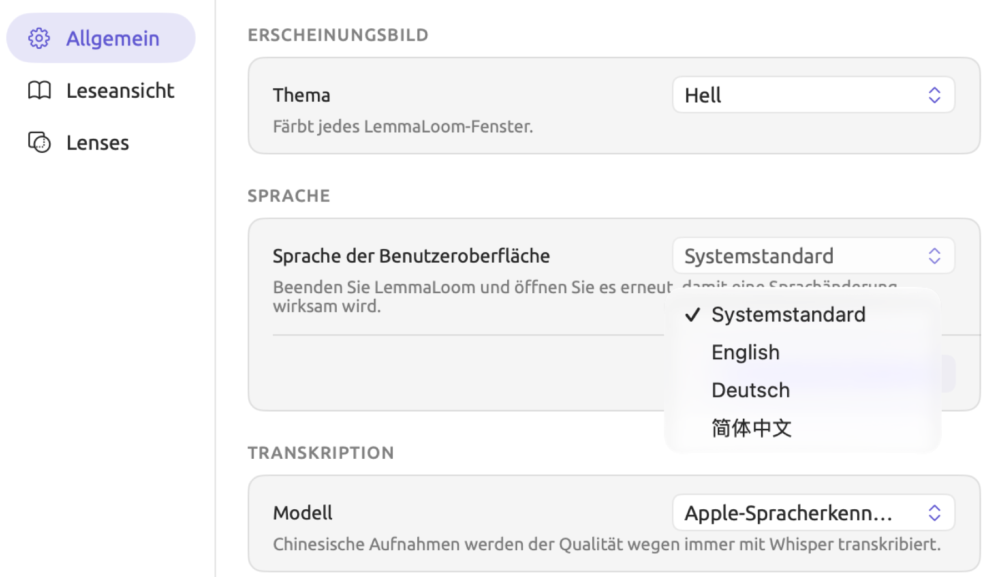

Sprachen der Dokumente
Der Dialog Dokument importieren hat ein Menü Sprache; mit Automatisch lässt LemmaLoom die Sprache selbst ermitteln. Sie können auch Englisch, Deutsch oder Chinesisch von Hand einstellen. Sie können die Sprache jederzeit in den Eigenschaften des Dokuments ändern; das Dokument wird dann für diese Sprache neu indiziert.
Für alle drei unterstützten Sprachen läuft die vollständige Grammatikanalyse einschließlich der drei eingebauten Analysatoren. Analysewerkzeuge weiter oben in diesem Kapitel beschreibt die Grammatikanalyse. Einige Lenses hängen jedoch von der jeweiligen Sprache ab:
| Lens | Englisch | Deutsch | Chinesisch |
|---|---|---|---|
| Wortklasse, Grammatische Funktion, Phrase | ja | ja | ja |
| Modalität, Verneinung, Konnektoren | ja | ja | ja |
| Kohäsion, Metadiskurs, Rhetorik | ja | ja | ja |
| Morphologie | ja | ja | nein |
| Satzfelder | nein | ja | nein |
| Konstruktionen, Partikeln | nein | nein | ja |
Die Lenses Kohäsion, Metadiskurs und Rhetorik beruhen auf den gleichnamigen Analysatoren. Erst wenn der Analysator für das Dokument gelaufen ist, erscheint seine Lens im Lens-Menü. Wenn Sie einen Analysator beim Import deaktivieren oder später in den Dokumenteigenschaften entfernen, verschwindet die zugehörige Lens aus dem Lens-Menü.
Die Lens Morphologie annotiert grammatische Merkmale wie Tempus, Numerus, Steigerungsstufe (groß, größer, am größten) und Verbform. Im Deutschen annotiert sie zusätzlich Kasus, Modus und Genus. Da das Chinesische Wörter nicht nach diesen Merkmalen flektiert, steht die Lens Morphologie nur für Dokumente auf Englisch und Deutsch zur Verfügung. Satzfelder annotiert im Deutschen die beiden Teile des Verbs (Linke Klammer, Rechte Klammer). Außerdem annotiert die Lens die Felder davor, dazwischen und danach (Vorfeld, Mittelfeld, Nachfeld), die zusammen als topologische Felder bezeichnet werden. Konstruktionen annotiert typische Satzkonstruktionen im Chinesischen (z. B. Konstruktionen mit 把 und 被), Partikeln annotiert Aspektpartikeln, Strukturpartikeln und Zählwörter im Chinesischen.
Dokumente in anderen Sprachen können Sie als Textdokumente importieren. Diese Dokumente lassen sich lesen, durchsuchen und kodieren; Sie können Memos dazu schreiben, Verknüpfungen zu ihnen anlegen und Lesezeichen setzen. In der Seitenleiste steht neben jedem Dokument das Kürzel seiner Sprache, etwa EN, DE oder ZH. Bei anderen Sprachen steht neben dem Kürzel ein Fragezeichen. Wenn Sie den Mauszeiger darauf halten, erscheint Sprache wird für die Indizierung nicht unterstützt. Für diese Dokumente stehen die Funktionen, die ein indiziertes Dokument voraussetzen, nicht zur Verfügung, darunter das Lens-Menü, der Tab Grammatik, die Wortskizze und Abfragen nach Wörtern und Sätzen. Abfragen nach Kodierungen, Memos oder Dokumenten allgemein sind dennoch möglich.
Aufnahmen sind eine Ausnahme. LemmaLoom transkribiert gesprochene Sprache nur als Englisch, Deutsch oder Chinesisch, je nachdem, welche dieser Sprachen am besten zu den ersten 30 Sekunden der Aufnahme passt. Gesprochenes Chinesisch wird durchgehend in vereinfachten Schriftzeichen transkribiert. Die Einzelheiten stehen unter Wie die Transkription funktioniert in Kapitel 4, Material importieren.
Um die Grammatik eines Dokuments in einer anderen Sprache zu untersuchen, übersetzen Sie es. Eine Übersetzung ins Englische, Deutsche oder Chinesische wird wie jedes andere indizierbare Dokument behandelt. Wenn Sie eine Abfrage oder Wortskizze für das Set Ihres Dokuments erstellen, wählen Sie einfach die Übersetzungen als Korpus.